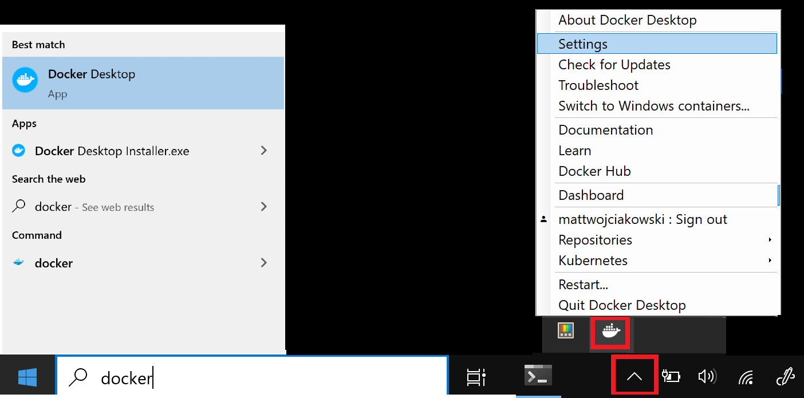

Install a Docker container
Docker is an open platform for shipping, and running applications. It allows to run
SpectroChemPy in an unified environment whatever the host platform is,
avoiding all potential installation problems as the images created have been tested before being shipped.
Installation
Before going further, if Docker is not yet installed on your system, you need to install it. Refer to this page to download the version you need.
Additional steps on windows
Enable WSL, install a Linux distribution, and update to WSL 2.
Open PowerShell as Administrator : to do this RIGHT-click on the start button and select
Windows Powershell (admin)run
dism.exe /online /enable-feature /featurename:Microsoft-Windows-Subsystem-Linux /all /norestart dism.exe /online /enable-feature /featurename:VirtualMachinePlatform /all /norestart
Restart your machine to complete the WSL install.
Update WSL to version 2:
Download the latest package : WSL2 Linux kernel update package for x64 machines and install.
Open PowerShell and run this command to set WSL 2 as the default version.
wsl --set-default-version 2
Install Docker Desktop.
Once installed, start Docker Desktop from the Windows Start menu, then select the Docker icon from the hidden icons menu of your taskbar. Right-click the icon to display the Docker commands menu and select “Settings”.
Ensure that “Use the WSL 2 based engine” is checked in Settings > General.
Warning
TO BE COMPLETED
Executing a SpectroChemPy Docker container
This be done using the following Docker run command :
docker run -v /path/on/host:/home/jovyan/work \
-p 8888:8888 \
--name scpy \
spectrocat/spectrochempy:latest \
start.sh jupyter lab
This command will create a container where python, jupyter lab and spectrochempy are preinstalled. During the creation of the container, the image containing these componrents will be downloaded from our Docker repository.
Note
This may take a while the first time this command is executed due to the size of the image to be downloaded, but once this is done, the image will be saved on your system so it will not be downloaded again except some update are detected
Description of the parameters
-vor--volumeallows to bind a local directory with the Docker application. For instance if you want to works on files located inC:\Users\toto\mywork, you can use:-v //C:/Users/myaccount/mywork:/home/jovyan/work.Note that
backslash (\)separator of windows path must be replaced by simpleslash (/).The container will be unable to access directories at upper levels than those specified in
-vbindings. Thus if for instance you need to access to a directory where you your data are savec you will need to write a binding explicitly. You can bind as many directory you want.docker run -v /path/on/host:/home/jovyan/work \ -v /another/path/on/host:/home/jovyan/data \ -p 8888:8888 \ --name scpy-latest \ spectrocat/spectrochempy:latest \ start.sh jupyter lab
Another possibility is to select for example your home directory; in this case you will have access as on your local system to all files accessibles from here.
-pis used to map an host port to the internal container port=8888 used by jupyter lab by default (It is not directly accessible). For instance, if you write -p 10000:8888, the Jupyter Lab application will be accessible on the host on port 10000.--name: This is optional to specify a container name. If not given a random name will be chosen.spectrocat/spectrochempy:latestThis is the name of the image to download.start.sh jupyter labThis is a command to start the Jupyter lab server.
Once the Docker run command is exectuted in a terminal, it will output some information and display the internal
address at the end:
...
To access the server, open this file in a browser:
file:///home/jovyan/.local/share/jupyter/runtime/jpserver-8-open.html
Or copy and paste one of these URLs:
http://982b516d00bd:8888/lab?token=45bf716d7cf02f1b7157448de04db163df5e80eb78920004
or http://127.0.0.1:8888/lab?token=45bf716d7cf02f1b7157448de04db163df5e80eb78920004
Go to you browser and paste http://127.0.0.1:8888/lab?token=45bf716d7cf02f1b7157448de04db163df5e80eb78920004 in
the address bar to display the application interface.
It your port binding is different, for example -p 10000:8888 , then you will have to change this address to:
http://127.0.0.1:10000/lab?token=45bf716d7cf02f1b7157448de04db163df5e80eb78920004. The token string is necessary
for security reason, but can be replaced by a password.
Note
The first time the Jupyter Lab session is opened for the container, it will need to rebuild the extensions. Click on the accept button when you are required to do so.